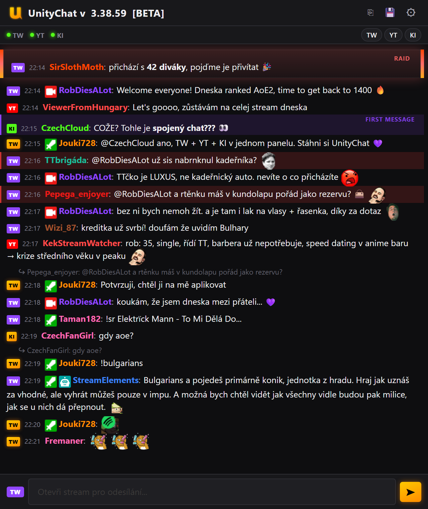

UNITY
CHAT
Twitch, YouTube a Kick v jednom panelu vedle streamu.
Zprávy ze
všech tří platforem
v jednom seznamu
Emoty ze
7TV, BTTV i FrankerFaceZ
včetně odznaků
Odpovídej kamkoli
bez přepínání tabu
Raidy, připnuté zprávy a zvýrazněné zmínky
